1.1 Tổng quan về hệ điều hành
1.1.1 Khái niệm HĐH
Hệ điều hành (Operating System) là một tập hợp các phần mềm dùng để quản lý tài nguyên phần cứng và cung cấp các dịch vụ cho các chương trình máy tính. Hệ điều hành là một thành phần quan trọng nhất trong hệ thống các phần mềm trên máy tính, tạo sự liên hệ giữa người sử dụng và máy tính thông qua các lệnh điều khiển. Nếu không có hệ điều hành máy tính sẽ không thể hoạt động được.
1.1.2. Chức năng chính của Hệ điều hành
Hệ điều hành có những chức năng chính sau:
· Thực hiện các lệnh theo yêu cầu của người sử dụng máy tính
· Quản lý, phân phối và thu hồi bộ nhớ
· Điều khiển các thiết bị ngoại vi như ổ đĩa, máy in, bàn phím, màn hình,...
· Quản lý tập tin,...
1.1.3. Các đối tượng do Hệ điều hành quản lý
a. Tập tin (File)
Trên máy tính, dữ liệu được lưu trữ dưới dạng các tập tin theo một cấu trúc nào đó. Nội dung của tập tin có thể là chương trình, dữ liệu, văn bản,... Mỗi tập tin được lưu lên đĩa với một tên riêng phân biệt. Mỗi hệ điều hành có qui ước đặt tên khác nhau, hệ điều hành Windows có thể hỗ trợ đặt tên tập tin có chiều dài tối đa lên tới 255 ký tự. Tên tập tin thường có 2 phần: phần tên (name) và phần mở rộng (extension). Phần tên là phần bắt buộc phải có của một tập tin, còn phần mở rộng thì có thể có hoặc không.
· Phần tên: Bao gồm các ký tự chữ từ A đến Z, các chữ số từ 0 đến 9, các ký tự khác như #, $, %, ~, ^, @, (, ), !, _, khoảng trắng. Phần tên do người tạo ra tập tin đặt.
· Phần mở rộng: thường dùng 3 ký tự trong các ký tự nêu trên. Thông thường phần mở rộng do chương trình ứng dụng tạo ra tập tin tự đặt.
· Giữa phần tên và phần mở rộng có một dấu chấm (.) ngăn cách.
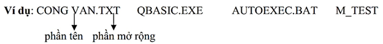
Phân loại tập tin
Ta có thể căn cứ vào phần mở rộng để xác định kiểu của file:
- COM, EXE : Các file khả thi chạy trực tiếp được trên hệ điều hành.
- TXT, DOC, ... : Các file văn bản.
- MP3, DAT, WMA, …, BMP, GIF, JPG, ...: Các file âm thanh, video và các file hình ảnh.
Ký tự đại diện (Wildcard)
Để chỉ ra một nhóm các tập tin muốn truy xuất, ta có thể sử dụng hai ký tự đại diện:
- Dấu ? dùng để đại diện cho một ký tự bất kỳ trong tên tập tin tại vị trí nó xuất hiện.
- Dấu * dùng để đại diện cho một chuỗi ký tự bất kỳ trong tên tập tin từ vị trí nó xuất hiện.
Ví dụ: - Bai?.doc đại diện cho Bai1.doc, Bai6.doc, Baiq.doc, …
- Bai*.doc đại diện cho Bai.doc, Bai6.doc, Bai12.doc, Bai Tap.doc, …
b. Thư mục (Folder/ Directory)
Các tập tin được lưu trữ trên máy tính tại một nơi được gọi là thư mục. Thư mục là nơi lưu giữ các tập tin theo một chủ đề nào đó theo ý người sử dụng. Đây là biện pháp giúp ta quản lý được tập tin, dễ dàng tìm kiếm chúng khi cần truy xuất.
Trên mỗi đĩa có một thư mục chung gọi là thư mục gốc. Thư mục gốc không có tên riêng và được ký hiệu là \ (dấu xổ phải: backslash). Dưới mỗi thư mục gốc có các tập tin trực thuộc và các thư mục con. Trong các thư mục con cũng có các tập tin trực thuộc và thư mục con của nó. Thư mục chứa thư mục con gọi là thư mục cha. Thư mục đang làm việc gọi là thư mục hiện hành. Tên của thư mục tuân thủ theo cách đặt tên của tập tin.
c. Ổ đĩa (Drive)
Ổ đĩa là thiết bị dùng để đọc và ghi thông tin vào đĩa, các ổ đĩa thông dụng là: Ổ đĩa di động (còn gọi là ổ đĩa USB), Ổ đĩa cứng, Ổ đĩa CD/DVD.
d. Đường dẫn (Path)
Mỗi thư mục có thể chứa nhiều tập tin và thư mục con, mỗi thư mục con lại có thể chứa nhiều tập tin và thư mục con bên trong. Với kiểu lưu trữ như vậy tạo nên một cấu trúc cây gọi là cây thư mục (Folder tree). Để đi đến thư mục được chỉ định cần phải đi qua các thư mục trung gian. Đường đi từ một thư mục đến một thư mục chỉ định được gọi là đường dẫn. Đường dẫn là một danh sách có thứ tự của các thư mục liên tiếp nhau và được phân cách bởi ký hiệu \ (dấu xổ phải: backslash).
1.2 Một số hệ điều hành phổ biến và ứng dụng:
1.2.1 Các dòng Hệ điều hành
Hiện nay có 2 dòng hệ điều hành tồn tại cho phép người dùng có thể chọn lựa:
· Hệ điều hành mã nguồn đóng: Là các hệ điều hành thương mại, người dùng phải mua giấy phép bản quyền. Hiện nay hệ điều hành Windows của hãng công nghệ Microsoft là hệ điều hành mã nguồn đóng được sử dụng phổ biến. Các phiên bản của Windows: Windows 95, Windows 98, Windows 2000, Windows XP, Windows Vista, Windows 7, Windows 8, ….
· Hệ điều hành mã nguồn mở: Là những hệ điều hành miễn phí, người dùng có thể tải về và cài đặt vào máy tính mà không cần phải trả bất kỳ khoản chi phí nào để sử dụng. Các hệ điều hành mã nguồn mở phổ biến nhất hiện nay là hệ điều hành Unix/Linux với các bản phân phối: Ubuntu, Mandriva, Fedora, MintLinux, CentOS, Debian, …
Một số HĐH máy tính phổ biến hiện nay:
1. Windows
o Là hệ điều hành phổ biến nhất, phát triển bởi Microsoft. Được sử dụng trong cả môi trường cá nhân và doanh nghiệp.
o Ứng dụng: Các phần mềm như Microsoft Office, Adobe Photoshop, trình duyệt web Chrome đều có thể chạy trên Windows.
2. macOS
o Hệ điều hành của Apple, được sử dụng trên các thiết bị như MacBook, iMac. macOS nổi tiếng với độ ổn định và bảo mật cao.
o Ứng dụng: Phù hợp với dân thiết kế, phát triển ứng dụng, với các phần mềm như Final Cut Pro, Logic Pro.
3. Linux
o Hệ điều hành mã nguồn mở, thường được dùng cho các máy chủ, môi trường phát triển, và cả cá nhân. Linux phổ biến với các nhà phát triển phần mềm.
o Ứng dụng: Lập trình, quản trị hệ thống, và bảo mật máy chủ.
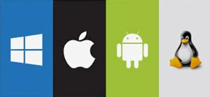
Logo của các hệ điều hành phổ biến (Windows, macOS, Android, Linux)
1.3 Sử dụng Microsoft Windows 10:
1.3.1 Sơ lược về sự phát triển của HĐH Windows:
Windows là một hệ điều hành do hãng Microsoft phát triển. Từ version 3.0 ra đời vào tháng 5 năm 1990, đến nay hãng Microsoft đã không ngừng cải tiến làm cho hệ điều hành này ngày càng được hoàn thiện. Microsft Windows gồm các phiên bản sau: Windows 95,Windows 98, Windows Me, Windows NT 4.0, Windows 2000, Windows XP, Windows Vista, Windows 7, Windows 8, Windows 10. Trong giáo trình này trình bày Windows 10.
Windows 10 là hệ điều hành hiện đại với giao diện trực quan, dễ sử dụng và cung cấp nhiều tính năng hữu ích. Dưới đây là các thao tác cơ bản khi sử dụng Windows 10:
- Giao diện chính và Start Menu
o Start Menu: Cung cấp quyền truy cập nhanh vào các ứng dụng, cài đặt và tài liệu.
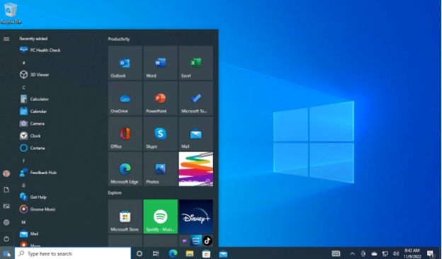
o Taskbar: Thanh công cụ ở phía dưới cùng màn hình chứa các biểu tượng chương trình đang chạy hoặc thường dùng.
- Quản lý cửa sổ
o Khi bạn mở nhiều ứng dụng cùng lúc, bạn có thể dễ dàng quản lý chúng qua tính năng Task View (phím tắt Windows + Tab) hoặc kéo các cửa sổ để chia màn hình.
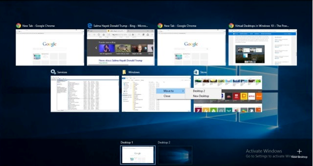
Giao diện Windows 10 với các cửa sổ ứng dụng và Task View
1.3.2 Khởi động và tắt máy tính trên Windows 10
a. Khởi động Windows 10:
Windows 10 được tự động khởi động sau khi bật nguồn máy tính. Sẽ có thông báo yêu cầu nhập vào tài khoản (User name) và mật khẩu (Password) của người dùng. Thao tác này gọi là đăng nhập (login).
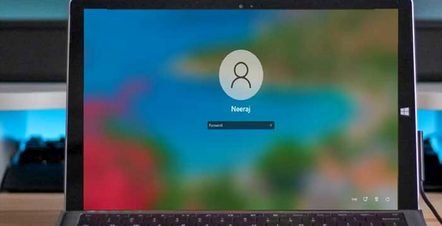
Màn hình đăng nhập trong Windows 10
Sau khi đăng nhập, màn hình Desktop sẽ xuất hiện để người dùng có thể chọn ứng dụng bắt đầu sử dụng.
Mỗi người sử dụng sẽ có một tập hợp thông tin về các lựa chọn tự thiết lập cho mình (như hình nền, các chương trình tự động chạy khi khởi động máy, tài nguyên/ chương trình được phép sử dụng, v.v...) gọi là user profile và được Windows lưu giữ lại để sử dụng cho những lần đăng nhập sau.
b. Tắt máy tính trong Windows 10:
Trước khi thoát khỏi hệ điều hành, cần phải đóng các chương trình đang mở.
Để tắt máy tính hoặc khởi động lại hệ thống, người dùng phải nhấp vào nút Start ở góc dưới cùng bên trái của màn hình. Sau đó sẽ thấy ba tùy chọn - Khởi động lại, Tắt và chế độ ngủ Ngủ, chọn tùy chọn bạn muốn theo yêu cầu của bạn.
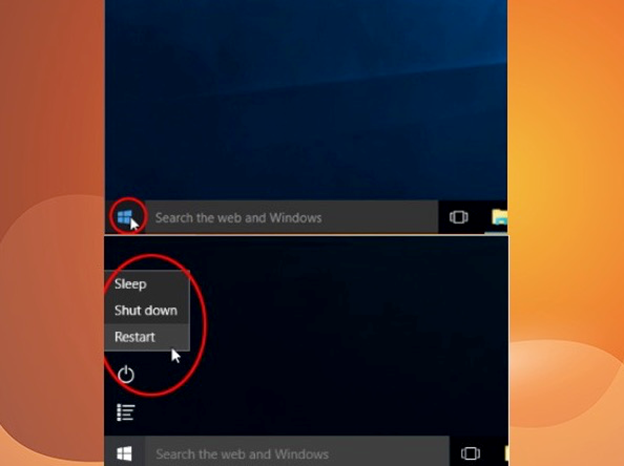
Nhấn tổ hợp phím Alt + F4 trên máy tính sử dụng hệ điều hành Windows của bạn để mở menu tắt máy.
Tại menu này, người dùng cũng có thể lựa chọn các hành động khác như: thay đổi người dùng, khởi động lại máy tính, đưa máy tính vào chế độ ngủ. Bạn chỉ cần chọn chế độ mình muốn và nhấp vào "Ok"
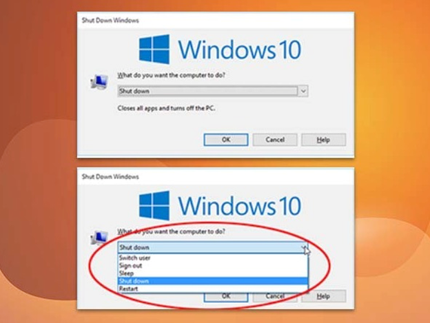
Tắt máy tính sử dụng tổ hợp phím Alt + F4
1.3.3 Màn hình Desktop của Windows 10
Desktop là màn hình của một máy tính có thể sử dụng, thao tác những công việc hoặc mục đích theo cá nhân của mình trên màn hình này. Ngoài ra, Desktop chính là nơi sẽ hiển thị những ứng dụng mà người dùng đã cài đặt trên máy tính. Desktop giúp bạn thấy được máy tính của mình đang hoạt động như thế nào sau khi hệ điều hành khởi động.
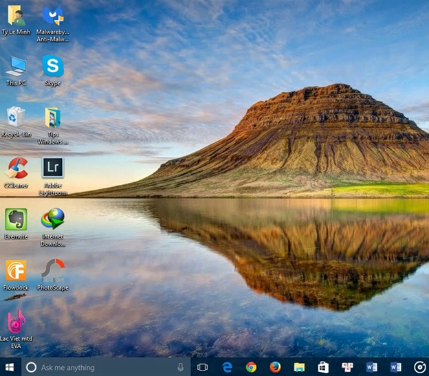
Màn hình Desktop của Windows 10
Nằm cuối màn hình là thanh tác vụ (Taskbar). Trên thanh tác vụ có biểu tượng Internet Explorer, File Explorer, ...
a. Những biểu tượng trên màn hình nền
Các biểu tượng (icon)
Biểu tượng là các hình vẽ nhỏ đặc trưng cho một đối tượng nào đó của Windows hoặc của các ứng dụng chạy trong Windows. Phía dưới biểu tượng là tên biểu tượng, thông thường tên biểu tượng diễn giải cho chức năng nào đó được gán cho biểu tượng (ví dụ nó mang tên của 1 trình ứng dụng).
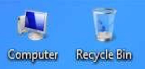
Biểu tượng trên màn hình desktop
Computer
Biểu tượng này cho phép duyệt nhanh tài nguyên trên máy tính. Khi mở Computer (bằng thao tác Double Click hoặc Right Click/ Open trên biểu tượng của nó), cửa sổ Computer sẽ xuất hiện.
Recycle Bin
Recycle Bin (hình 4.7) là nơi lưu trữ tạm thời các tập tin và các đối tượng đã bị xóa. Những đối tượng này chỉ thật sự mất khi bạn xóa chúng trong cửa sổ Recycle Bin hoặc Right_Click vào biểu tượng Recycle Bin rồi chọn Empty Recycle Bin. Nếu muốn phục hồi các tập tin hoặc các đối tượng đã bị xóa trong cửa sổ Recycle Bin, bạn chọn đối tượng cần phục hồi, sau đó Right_Click/ Restore.
Chú ý: Muốn xóa các tập tin, các đối tượng trực tiếp không lưu trong Recycle Bin, ta thực hiện các cách sau:
· R- Click lên đối tượng Recycle Bin trên màn hình nền và chọn Don't move files to the
· Recycle Bin. Remove files immediately when deleted
· Nhấn tổ hợp phím Shift + Delete lên đối tượng muốn xóa.
Các lối tắt (biểu tượng chương trình - Shortcuts)
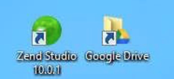
Các lối tắt giúp bạn truy nhập nhanh một đối tượng hoặc một thư mục nào đó, ví dụ mở một chương trình, một đĩa cứng, một thư mục, .v.v.. Để mở một đối tượng, bạn Double_Click trên Shortcut của nó hoặc Right_Click/ Open. Biểu tượng của các lối tắt sẽ có hình mũi tên màu xanh chỉ về hướng đông bắc.
Menu ngữ cảnh (Context menu)
Trong Windows khi Right_Click lên một đối tượng (tập tin, thư mục…), một menu ngữ cảnh sẽ hiển thị chứa các lệnh cho phép tương tác với đối tượng đó. Tùy vào đối tượng và quyền của người dùng mà các lệnh xuất hiện trong menu ngữ cảnh sẽ khác nhau.
1.3.4 Cửa sổ của một chương trình trong Windows 10a. Cửa sổ và các thành phần của cửa sổ
Một cửa sổ trên hệ điều hành Windows bao gồm rất nhiều thành phần như hộp điều khiển (Control box), thanh menu lệnh (Menu bar), tiêu đề cửa sổ (Title bar), nút thu nhỏ cửa sổ (Minimize), nút phóng to/thu nhỏ (Maximize/Restore), nút đóng cửa sổ (Close), …
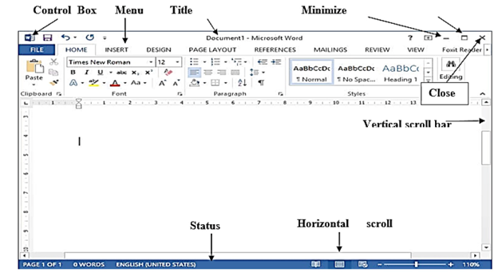
Cửa sổ phần mềm Microsoft Word và các thành phần.
b. Các thao tác trên một cửa sổ:
· Di chuyển cửa sổ: Drag thanh tiêu đề cửa sổ (Title bar) đến vị trí mới.
· Thay đổi kích thước của cửa sổ: Di chuyển con trỏ chuột đến nút cạnh hoặc nút góc của cửa sổ, khi con trỏ chuột biến thành hình mũi tên hai chiều thì Drag chuột để thay đổi kích thước.
· Phóng to cửa sổ ra toàn màn hình: Click lên nút Maximize .
· Phục hồi kích thước trước của cửa sổ: Click lên nút Restore .
· Thu nhỏ cửa sổ thành biểu tượng trên Taskbar: Click lên nút Minimize .
· Chuyển đổi giữa các cửa sổ của các ứng dụng đang mở: Để chuyển đổi giữa các ứng dụng nhấn tổ hợp phím Alt + Tab hoặc click chọn biểu tượng ứng dụng trên thanh Taskbar.
· Đóng cửa sổ: Click lên nút Close của cửa sổ hoặc nhấn tổ hợp phím Alt + F4.
1.3.5. Hộp hội thoại trong Windows 10:
Các hộp thoại thường xuất hiện khi chạy chương tình ứng dụng Windows để giúp bạn chọn thêm thêm những thông số trước khi chương trình thực hiện lệnh của bạn.
a. Các thành phần của hộp hội thoại:
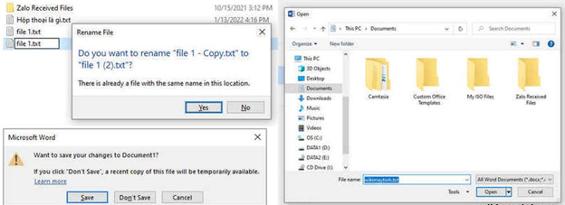
Hộp hội thoại trong Windows
Thông thường, trên một hộp hội thoại sẽ có các thành phần sau:
· Hộp văn bản (Text box): dùng để nhập thông tin.
· Hộp liệt kê (List box): liệt kê sẵn một danh sách có các mục có thể lựa chọn, nếu số mục trong danh sách nhiều không thể liệt kê hết thì sẽ xuất hiện thanh trượt để cuộn danh sách.
· Hộp liệt kê thả (Drop down list box/ Combo box): khi Click chuột vào nút thả thì sẽ liệt kê một danh sách các mục và cho phép chọn một mục.
· Hộp lựa chọn (Check box): cho phép chọn một hoặc nhiều mục.
· Nút tùy chọn (Option button): bắt buộc phải chọn một trong số các mục.
Nút lệnh (Command button): yêu cầu thực hiện lệnh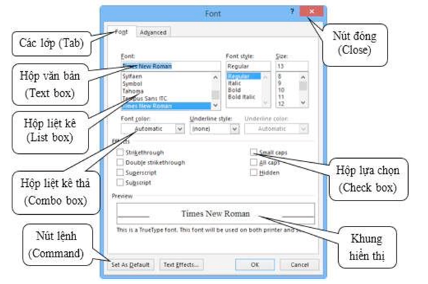
Hộp hội thoại
Các nút lệnh thông dụng:
· OK: thực hiện lệnh theo thông số đã chọn và đóng hộp thoại.
· Close: giữ lại các thông số đã chọn và đóng hộp thoại.
· Cancel (hay nhấn phím Esc): không thực hiện lệnh và đóng hộp thoại.
· Apply: áp dụng các thông số đã chọn nhưng không đóng hộp thoại.
· Default: đặt mặc định theo các thông số đã chọn.
1.3.6. Sao chép dữ liệu trong Windows 10:
Việc sao chép dữ liệu trong một ứng dụng hoặc giữa các ứng dụng được thực hiện thông qua bộ nhớ đệm (Clipboard). Tại một thời điểm, bộ nhớ đệm chỉ chứa thông tin mới nhất. Khi sao chép dữ liệu từ một vị trí để dán vào một vị trí khác, cần thực hiện bốn thao tác theo thứ tự sau:
· Chọn đối tượng cần sao chép.
· Thực hiện lệnh Edit/ Copy hoặc nhấn tổ hợp phím Ctrl + C hoặc Right_Click/ Copy để sao chép đối tượng vào bộ nhớ đệm (Clipboard).
· Xác định vị trí cần dán.
· Thực hiện lệnh Edit/ Paste hoặc nhấn tổ hợp phím Ctrl + V hoặc Right_Click/ Paste để dán đối tượng từ bộ nhớ đệm vào vị trí cần dán.
1.3.7. Cách khởi động và thoát khỏi các chương trình trong Windows 10:
Khởi động chương trình ứng dụng
Có nhiều cách để khởi động một chương trình ứng dụng trong Windows:
Khởi động từ Start Screen
Nhấn vào vị trí góc bên trái của thanh taskbar hoặc nhấn phím Windows ) trên bàn phím, click vào chương trình muốn khởi động.
Khởi động bằng lệnh Run
Right_click vào vị trí bên góc trái trên thanh Taskbar và chọn lệnh Run (hoặc nhấn tổ hợp phím Windows + R) sẽ xuất hiện hộp thoại Run.
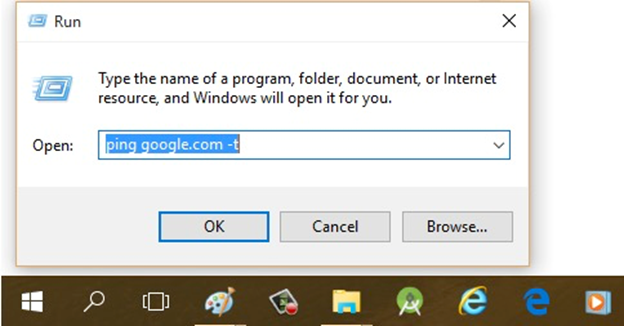
Hộp thoại run
Dùng Shortcut để khởi động các chương trình:
Double_Click hoặc Right_Click/ Open vào Shortcut của các ứng dụng mà bạn muốn khởi động. Các Shortcut thường được đặt trên màn hình nền Desktop.
Khởi động từ các Folder
Khi tên của một chương trình ứng dụng không hiện ra trên menu Start thì cách tiện lợi nhất để bạn khởi động nó là mở từ các Folder, Double_Click hoặc Right_Click/ Open trên biểu tượng của chương trình ứng dụng cần mở.
Thoát khỏi chương trình ứng dụng
Để thoát khỏi một ứng dụng ta có thể dùng 1 trong các cách sau đây:
· Nhấn tổ hợp phím Alt + F4
· Click vào nút Close (ở góc trên bên phải của thanh tiêu đề).
· Chọn menu File/ Exit.
· Double_Click lên nút Control Box (ở góc trên bên trái của thanh tiêu đề).
· Click lên nút Control Box. Click chọn Close.
Khi đóng 1 ứng dụng, nếu dữ liệu của ứng dụng đang làm việc chưa được lưu lại thì nó sẽ hiển thị hộp thoại nhắc nhở việc xác nhận lưu dữ liệu (hình 4.12). Thông thường có 3 chọn lựa:
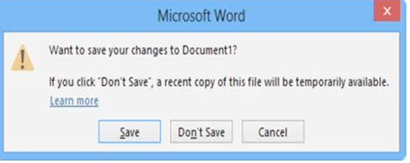
Hộp thoại nhắc nhở lưu dữ liệu của Microsoft Word
· Save: lưu dữ liệu và thoát khỏi chương trình ứng dụng.
· Don’t Save: thoát khỏi chương trình ứng dụng mà không lưu dữ liệu.
· Cancel: hủy bỏ lệnh, trở về chương trình ứng dụng.
1.3.7. Thay đổi cấu hình Windows:
Windows cho phép thay đổi cấu hình cho phù hợp với công việc hoặc sở thích của người sử dụng thông qua nhóm các công cụ trong Control Panel. Trên Windows 10 để vào control panel thực hiện các cách sau:
· D-Click vào biểu tượng Control Panel trên màn hình nền nếu có.
· Nhấp chuột phải ở góc dưới bên trái của màn hình (hoặc tổ hợp phím Windows + X), khi đó menu xuất hiện và chọn Control panel. Cửa sổ Control Panel sẽ xuất hiện.
· Trước tiên phải mở charm bar bằng cách rê chuột vào biên bên phải màn hình, chọn Settings / Control Panel.
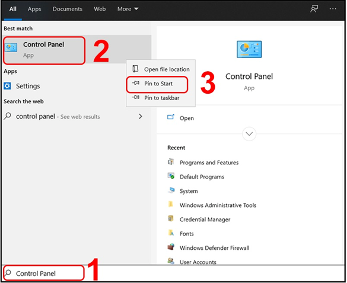
Cửa sổ Control Panel
Từ cửa sổ Control Panel ta có thể sử dụng các công cụ để thiết lập cấu hình cho hệ thống, thay đổi ngày giờ, cài đặt thêm Font chữ, thiết bị phần cứng, phần mềm mới hoặc loại bỏ chúng đi khi không còn sử dụng nữa.
1.3.8. Thay đổi hình nền trong Windows 10:
Màn hình Desktop là nơi mà người sử dụng sẽ khởi động các chương trình cũng như quản lý các ứng dụng đang mở. Windows cho phép thay đổi hình nền của desktop theo ý thích của người sử dụng bằng cách:
· Right_click vào vị trí trống trên màn hình desktop và chọn Personalize.
· Chọn Desktop Background, khi đó cửa sổ mới hiện ra.
· Chọn các ảnh trong danh sách.
· Nếu người dùng muốn thêm ảnh mới thì nhấn vào nút Browse để chọn thư mục chứa ảnh mới.
· Ngoài ra, ta có thể chọn hơn một ảnh để làm ảnh nền bằng cách chọn nhiều ảnh trong danh sách, các ảnh sẽ tự đổng thay đổi theo khoảng thời gian mà người dùng thiết lập tại mục “Change picture every:” với thời lượng từ 10s cho đến 1 ngày.
· Nếu muốn các ảnh thay đổi không theo thứ tự ta check vào mục Shuffle.
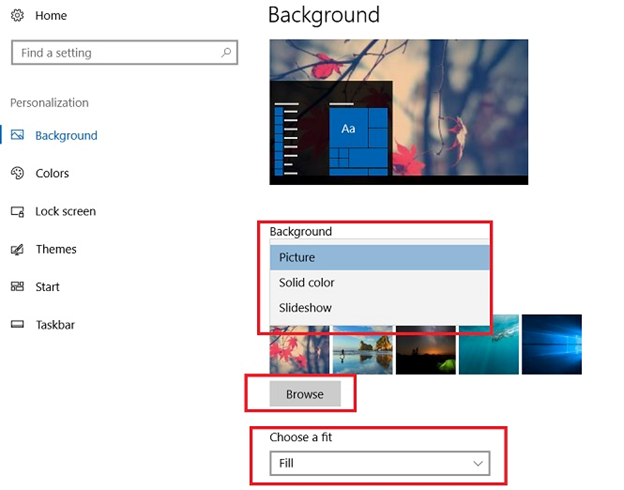
Cửa sổ thay đổi ảnh nền Desktop
1.3.9. Bật chế độ bảo vệ màn hình:
Chế độ bảo vệ màn hình trong Windows được kích hoạt khi không có hoạt động sử dụng đã được cảm nhận trong một thời gian nhất định. Để bật chế độ bảo vệ màn hình (Screen saver) ta thực hiện:
· Right_click vào vị trí trống trên màn hình desktop và chọn Personalize.
· Trong cửa sổ Personalize nhấn biểu tượng Screen saver . Hộp thoại xuất hiện
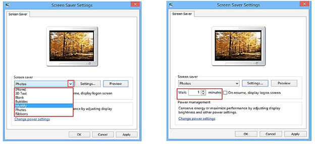
Hộp thoại Screen saver
· Nhấn vào mũi tên của hộp liệt kê thả dưới Screen Saver (hình 4.15) và chọn một đối
· tượng từ danh sách.
· Nhấn vào nút Settings… để đặt thêm tùy chọn.
· Đặt thời gian chờ cho Srceen saver, nhấn nút Preview để xem kế quả.
· Nhấn nút OK.
1.3.10. Thay đổi độ phân giải của màn hình:
Độ phân giải màn hình là thông số qui định trên màn hình có bao nhiêu điểm ảnh (pixel) được bố trí theo chiều ngang và bao nhiêu điểm ảnh được bố trí theo chiều dọc. Mỗi điểm ảnh sẽ hiển thị một chi tiết hình ảnh trên máy tính. Khi màn hình được thiết lập độ phân giải càng lớn thì hình ảnh càng sắc nét và trung thực hơn. Độ phân giải càng lớn thì hình ảnh hiển thị sẽ càng nhỏ lại và càng rõ hơn, không bị mờ hay bị “bể hạt”. Độ phân giải màn hình được ghi theo quy tắt (dài x cao). Ví dụ độ phân giải màn hình là (1440x900) có nghĩa là chiều dài hiển thị 1440 pixel và chiều cao là 900 pixel. Thay đổi độ phân giải như sau:
· Nhấn chuột phải vào vị trí trống trên màn hình desktop.
· Chọn Screen Resolution.
· Chọn độ phân giải mong muốn trong danh sách Resolution.
· Chọn Apply để áp dụng
· Chọn Keep changes để xác nhận thay đổi.
· Chọn Revert hoặc nhấn phím Esc trên bàn phím để huỷ bỏ lệnh.
Chú ý: Trước khi thay đổi độ phân giải màn hình cần phải xem kỹ danh sách độ phân giải màn hình có thể hiển thị. Nếu chọn sai thì màn hình đen sẽ hiện ra, điều đó có nghĩa màn hình đã không thể hiển thị được hình ảnh ở độ phân giải vừa chọn.
1.3.11. Thay đổi mật khẩu:
Để đăng nhập vào máy tính, ta có thể dùng 2 loại tài khoản: tài khoản quản trị (administrator account) và tài khoản bình thường (user account). Nếu người dùng đăng nhập với tài khoản quản trị sẽ có quyền thay đổi mật khẩu của tất cả các tài khoản hiện có trên máy tính. Đối với tài khoản bình thường thì người dùng có thể thay đổi mật khẩu của chính tài khoản đang đăng nhập. Để thay đổi mật khẩu:
· Mở thanh Charm, chọn Settings, chọn Change PC Settings ở dưới nút Power.
· Cửa sổ mới hiện ra, chọn Users trong danh sách cửa sổ bên trái màn hình.
· Chọn Change your password bên cửa sổ bên phải.
· Một cửa sổ mới hiện ra, nhập vào mật khẩu hiện tại đang đăng nhập vào ô Current password sau đó nhấn Next.
· Cửa sổ mới hiện ra, nhập và mật khẩu mới tại ô New password.
· Nhập mật khẩu mới lần nữa tại ô Reenter password.
· Tại ô Password hint nhập vào một thông tin gợi ý liên quan đến mật khẩu mới, thông tin này được dùng để gợi nhớ mật khẩu cho người dùng trong trường hợp người dùng quên mật khẩu.
· Nhấn Next để tiếp tục.
· Nhấn Finish để hoàn tất.
1.3.12. Thay đổi ngày giờ hệ thống:
· Để thay đổi ngày tháng và thời gian cho máy tính người dùng có thể vào Control
· Panel chọn Date and Time hoặc nhấn chuột lên biểu tượng đồng hồ ở thanh Taskbar,
· chọn Change date and time settings, chọn tiếp Change Date and Time để thay đổi ngày giờ.
· Để thay đổi múi giờ cho hệ thống nhấn chọn Change time zone và chọn múi giờ thích hợp (ví dụ: Việt Nam sử dụng múi giờ (UTC+07:00) Bangkok, Hanoi, Jakarta).
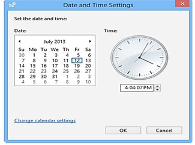
1.3.13. Thay đổi định dạng ngày giờ và tiền tệ
Thông thường, hệ điều hành sử dụng định dạng tiền tệ và ngày tháng của Mỹ (ví dụ ngày tháng có định dạng mm/dd/yyyy, do đó 07/26/2017 là ngày 26 tháng 07 năm 2017). Ứng dụng có tên Region trong Control Panel cho phép thay đổi định dạng này
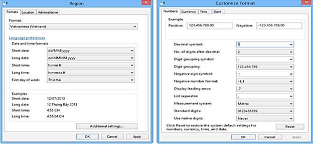
Cửa sổ thay đổi định dạng ngày và giờ và lớp Number
Để thay đổi định dạng ngày và giờ, trong danh sách Format chọn lại định dạng muốn thay đổi (ví dụ chọn Vietnamese (Vietnam)). Kết quả sẽ hiển thị ở các ô: Date and time formats. Trong khung Examples hiển thị các kết quả của định dạng được thiết lập tương ứng với các mục ở trên. Sau khi lựa chọn xong nhấn Apply để thay đổi. Để thay đổi các định dạng tiền tệ, định dạng số ta click chuột vào nút Additional settings để thay đổi. Chọn các lớp tương ứng để thay đổi:
Number: Thay đổi định dạng số, cho phép định dạng việc hiển thị giá trị số
- Decimal symbol: Thay đổi ký hiệu phân cách hàng thập phân.
- No. of digits after decimal: Thay đổi số các số lẻ ở phần thập phân.
- Digit grouping symbol: Thay đổi ký hiệu phân nhóm hàng ngàn.
- Digit grouping: Thay đổi số ký số trong một nhóm (mặc nhiên là 3).
- Negative sign symbol: Thay đổi ký hiệu chỉ số âm.
- Negative number format: Thay đổi dạng thể hiện của số âm.
- Display leading zeroes: Hiển thị hay không hiển thị số 0 trong các số chỉ có phần thập phân: 0.7 hay .7.
- Measurement system: Chọn hệ thống đo lường như cm, inch, …
- List separator: Chọn dấu phân cách giữa các mục trong một danh sách.
Currency: Thay đổi định dạng tiền tệ ($,VND,...)
Time: Thay đổi định dạng thời gian, cho phép bạn định dạng thể hiện giờ trong ngày theo chế độ 12 giờ hay 24 giờ.
Date: Thay đổi định dạng ngày tháng (Date), cho phép bạn chọn cách thể hiện dữ liệu ngày theo 1 tiêu chuẩn nào đó. Trong đó Short date format: cho phép chọn quy ước nhập dữ liệu ngày tháng
Ví dụ: ngày/tháng/năm (d/m/yy) hoặc tháng/ngày/năm (m/d/yy)
1.3.14. Cài đặt và gỡ bỏ chương trình:
Sau khi cài đặt hệ điều hành Windows, chỉ có một số ứng dụng cơ bản được cài đặt kèm theo như chương trình vẽ (paint), máy tính điện tử (calculator), … và một vài chương trình khác. Nếu muốn sử dụng các chương trình không được cài đặt sẵn, người sử dụng có thể cài đặt (install) thêm vào hoặc có thể gỡ bỏ (uninstall) các chương trình đã cài đặt nhưng không còn sử dụng.
a. Cài đặt chương trình
Để cài đặt chương trình vào máy tính trước tiên người dùng cần phải có tập tin cài đặt (thường có tên là setup.exe/install.exe). Ta double_click vào tập tin cần cài đặt và làm theo các hướng dẫn. Thông thường ở các bước cài đặt chương trình sẽ hỏi nơi để cài đặt (mặc định sẽ cài vào thư mục C:\Program Files\), các lựa chọn cài đặt (cài đặt toàn bộ các tính năng hay chỉ chọn một vài tính năng), nhập vào thông tin bản quyền phần mềm (thường là product key hoặc serial, email…) để chương trình kiểm tra. Khi hoàn thành các bước chương trình sẽ bắt đầu quá trình cài đặt và hiển thị trạng thái cài đặt. Khi kết thúc quá trình cài đặt, một thông báo sẽ hiển thị để cho người dùng biết quá trình cài đặt thành công hoặc thất bại.
b. Gỡ bỏ chương trình đã cài đặt
Để gỡ bỏ các chương trình không còn sử dụng ta double_click chuột vào biểu tượng
Programs and Features trong cửa sổ Control Panel. Một cửa sổ mới hiện ra chứa danh sách các chương trình đã được cài đặt trong máy tính (hình 4.19).
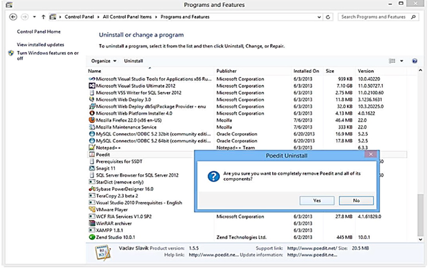
Gỡ bỏ các chương trình đã cài đặt
Để gỡ bỏ chương trình nào ta chỉ cần chọn chương trình trong danh sách đã liệt kê, nhấn chuột phải và chọn Uninstall. Một hộp thoại sẽ hiện ra thông báo rằng chương trình sẽ bắt đầu gỡ bỏ, nhấn Yes để xác nhận. Nếu chương trình có hiển thị các lựa chọn, đọc kỹ các lựa chọn và chọn Next để tiếp tục. Sau khi gỡ bỏ chương trình sẽ thông báo đã gỡ bỏ thành công hay thất bại.
Chú ý: Một số chương trình có thể thực thi trực tiếp mà không cần phải qua tiến trình cài đặt ở trên, do đó khi liệt kê các chương trình đã được cài đặt ta sẽ không thấy chương trình đó trong danh sách này.
1.3.15. Tắt các chương trình bị treo:
Trong quá trình sử dụng, khi một chương trình không thể xử lý được các yêu cầu chương trình đó sẽ không thực hiện các lệnh điều khiển của người dùng. Trạng thái này được gọi là treo. Khi chương trình bị treo người dùng sẽ không thể đóng chương trình đó theo cách bình thường. Muốn tắt các chương trình bị treo ta sử dụng tiện ích Task manager của Windows bằng cách nhấn chuột phải lên vị trống trên thanh taskbar chọn Task manager hoặc nhấn tổ hợp phím Ctrl-Alt-Delete và chọn Task manager.
Để tắt chương trình bị treo, chọn tên chương trình trong danh sách sau đó click chuột vào nút lệnh End task.
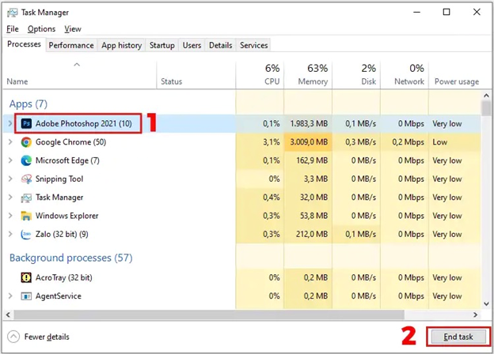
Hộp thoại Task manager
1.4.1. Cài đặt bộ gõ Tiếng Việt:
Để nhập liệu Tiếng Việt, người dùng thường sử dụng các bộ gõ phổ biến như Unikey, EVKey hoặc Vietkey.
o Bộ gõ Unikey
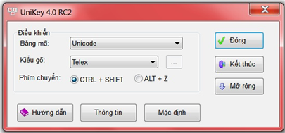
Bộ gõ Unikey
Unikey là chương trình bàn phím tiếng Việt phổ biến nhất trên Windows. Phần lõi xử lý tiếng Việt UniKey Input Engine cũng được sử dụng trong các chương trình bàn phím mặc định của các hệ điều hành Linux, Mac OS X và đặc biệt là tất cả các thiết bị dùng iOS (iPhone, iPad). UniKey Input Engine có mã nguồn mở theo giấy phép GNU General Public License.
Unikey.org là website chính thức duy nhất của phần mềm UniKey.
Sau khi cài đặt Unikey, bạn có thể bật chế độ gõ Tiếng Việt bằng tổ hợp phím Alt + Z.
Chuyển đổi giữa Tiếng Việt và Tiếng Anh:
· Để chuyển đổi ngôn ngữ nhập liệu, nhấn tổ hợp phím Alt + Shift.
· Unikey cũng cung cấp tùy chọn gõ kiểu Telex hoặc VNI, hai phương pháp nhập liệu Tiếng Việt phổ biến.
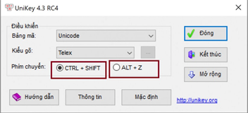
Phím tắt để chuyển đổi Tiếng Việt sang Tiếng Anh và ngược lại
o Bộ gõ EV Key:
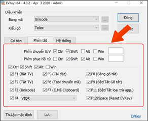
Bộ gõ EV Key
Tải bộ gõ EV Key tại: https://evkeyvn.com